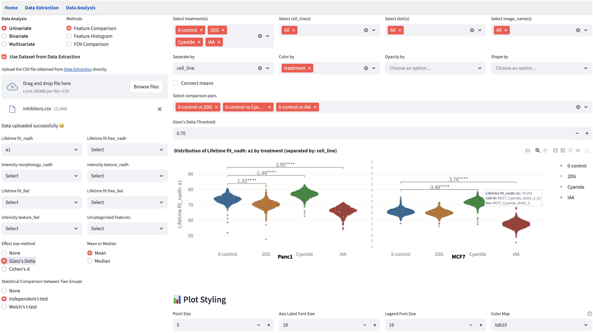

FLIM Playground

1 Quick Start
Welcome to the FLIM Playground 🥳🎉🥂! This is an interactive graphical user interface (GUI) that allows you to extract single-cell features from fluorescence lifetime imaging microscopy (FLIM) raw data (Data Extraction) and analyze extracted features or datasets extracted via other methods using a built-in repertoire of methods (Data Analysis).
To quickly try out different analysis methods, download this sample dataset and try the online demo. If you prefer to use your own data, read this chapter on data analysis configuration to learn how to configure the system.

Due to the online demo’s limitation in local file system access, extracting features from raw data is not available in the online demo. Read on to learn more about FLIM Playground from processing raw decay data to gaining insights.
1.1 Installation
FLIM Playground is built entirely in Python and is open-source.
1.1.1 Download
Download the desktop app from GitHub and double-click it to run. Releases are currently available for Windows 11 and Mac OS 26. If your operating system is not either of these, you can build it yourself by following the instructions below. Code will be open-sourced after publication.
1.1.2 Build it yourself
Clone the repo and navigate into the repository once cloned.
Install the Python environment
- Install uv if not yet installed
- run
uv sync
Build the app
- run
pyinstaller Flim-Playground.spec --clean
- run
1.2 Introduction
Fluorescence lifetime imaging microscopy (FLIM) measures the time it takes for a fluorescent molecule to emit light (return to the ground state) after being excited by a pulse of light (enter excited state). It is sensitive to changes in fluorophore microenvironment including, pH, temperature, and conformational changes due to protein-binding and the presence of quenchers1. Coupled with modern automated cell-segmentation methods2, FLIM enables single-cell analyses that can reveal biological heterogeneity.
To acquire FLIM data, a light source—typically a pulsed laser for time-domain methods or a modulated continuous-wave source for frequency-domain methods—is used to excite the fluorophore of interest. The emission is detected using instrumentation capable of resolving fluorescence decay, such as time-correlated single-photon counting (TCSPC), time-gated, or phase/modulation-based detection. In time-domain FLIM, the delay between excitation and photon arrival is measured, and often a histogram is built, with the x-axis representing the delay time and the y-axis representing the number of photons falling into each time bin. Compared to intensity images, FLIM has an additional dimension of time (e.g., 256 time bins per 12.5 nanoseconds).
In frequency-domain FLIM, the phase shift and modulation depth of the emission relative to the excitation are determined.
1.3 Challenges
A diverse set of tools — both open-source and commercial, ranging from libraries to code-free graphical user interfaces (GUIs) — are available to extract and analyze FLIM data, providing alternative methods and therefore flexibility to FLIM researchers. Examples include PhasorPy3, an open-source library for analyzing fluorescence lifetime using the phasor approach; FLUTE4, an open-source GUI for interactive phasor analysis; FLIMPA5, an open-source phasor analysis GUI enabling batch processing, ROI-based quantification, and experiment-level comparison through manual assignment; FLIMLib, an open-source generic curve fitting library that can be used to fit fluorescence lifetime decay data; SPCImage6, a commercial software for fitting and phasor features.
However, while some tools offer code-free interfaces, users still need to write custom code—either to prepare data in the proper format as input, or to further process their outputs for downstream analysis. The fragmentation between tools arises because each focuses on only a subset of data levels: pixel, cell ROI, channel, field of view, and experiment.
1.3.1 Data Levels
- Pixel:
- A single decay curve encoded in vendor-specific file formats (e.g., Becker & Hickl, PicoQuant, etc.)
- Region of Interest (ROI)
- Mask with cell labels
- Channel
- Different fluorophores
- Fluorophore-specific calibration files
- Masks focusing on different parts of the cell (e.g., whole cell, cytoplasm, nucleus, stain, etc.)
- Different feature extraction methods (fitting, phasor, morphology, texture)
- Field of View (FOV)
- Input decay types (e.g., 2D, 3/4D, pixel-level lifetime features already fitted)
- Experiment
- Different treatments, time points, cell lines, etc., and combinations thereof
An integrated framework should take into account all data levels ■■■■■(•) while maintaining the flexibility to handle various input types (◦). It should provide a level of abstraction to address fragmentation from data levels and input types.
Additionally, the use of FLIM is rapidly evolving, and new methods are being developed all the time. An integrated framework should allow users to choose among alternative methods seamlessly, be the backbone of iterative explorations integral to research, and be ready to incorporate new methods: The provided level of abstraction should address fragmentation from extraction and analysis methods.
Finally, many of the existing tools especially GUI based softwares are not cross-platform, which limits their accessibility. The Installation addresses this last challenge.
A closer parallel to FLIM Playground’s integrated approach is the combination of CellProfiler7, which extracts per-object morphological and texture features, and CellProfiler Analyst8, which ingests these outputs or other feature tables for visualization and statistical analysis. However, FLIM Playground stands apart in that it can extract lifetime features from time-resolved data, alongside morphological and texture features from intensity images. Its general data analysis module incorporates FLIM-specific methods (e.g., phasor analysis) and provides statistical models that address additional analysis aspects such as data heterogeneity, in addition to training machine learning classifiers.
1.4 Method
1.4.1 Feature Classes
Tabular data columns can be categorized into three feature classes:
- Identifiers: unique row identifier and (optional) field of view identifier that allow us to investigate the biological heterogeneity at the single-cell level
- Categorical features: conceptually help us group the rows (e.g.,
treatmentwill group the rows into different treatment groups) - Numerical features: quantify the differences/similarities between data groups
Science, from the data perspective, is about closing the conceptual categorical gaps with quantitative measurements.
At data levels, the data are processed to extract the feature classes in Data Extraction, and the classes are used in the Data Analysis modules.

1.4.2 Design
FLIM Playground has two independent sections:
Data Extraction
Data Extraction extracts single-cell features from the raw data. It adopts a framework that offers channel-level flexibility in input types and extraction methods without incurring too much overhead for users. Following the above categorization, it is divided into the following steps:
- Data Extraction Configuration (A): allows users to choose among alternative input types and extraction methods (extractors).
- Metadata organization (B): extracts the field of view identifiers and their configurations
- Numerical Feature Extraction: extracts single-cell numerical features based on user-selected extractors. More extractors can be integrated in the future.
- Calibration (C): calibrate for IRF shift or use fluorescence lifetime standard
- Alternative lifetime extractors (D):
- Alternative intensity-based extractors (D):
- Categorical feature extraction (E): extracts single-cell categorical features and combines experiment-level datasets.
Data Analysis
Data Analysis analyzes features—whether extracted through Data Extraction or by other methods—using visualizations and statistical modeling. It deploys a shared framework (F) built to handle the feature classes across all analysis methods, enabling the same interactive and frictionless exploration experience and allowing new methods to be integrated in the future easily.
- Data Analysis (G) goes in-depth into how FLIM Playground handles the feature classes and Data Analysis Config goes through how users can configure FLIM Playground to analyze datasets that are not extracted by Data Extraction.
Here is the list of analysis methods incorporated into FLIM Playground, grouped by the number of numerical features they take as inputs:
Both sections are built in Python and built as self-contained executables ready to run on major operating systems and in browsers (H).
1.4.3 Summary
FLIM Playground resolves these challenges with an interactive code-free graphical user interface (GUI) that spans the full pipeline. It integrates validation checks that guide users at every step, and has a built-in repertoire of analytical methods with interactive widgets that encourage hypothesis driven, iterative exploration of large datasets. It is built on a modular architecture that enables incorporation of new algorithms in the future.